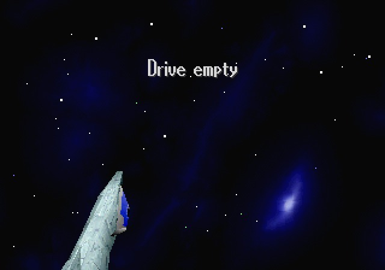
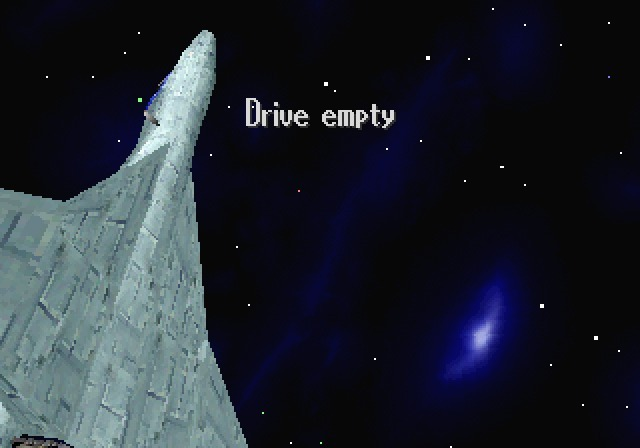
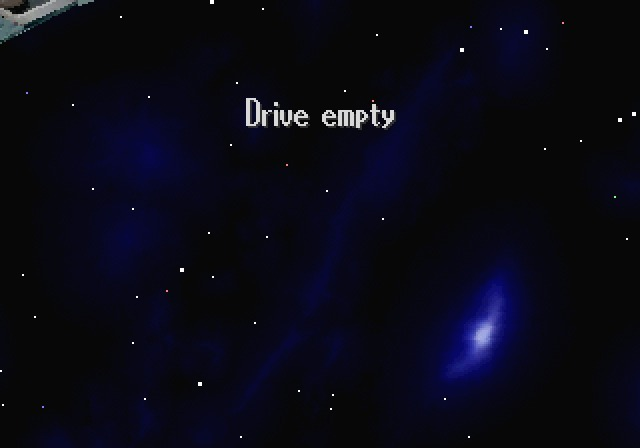
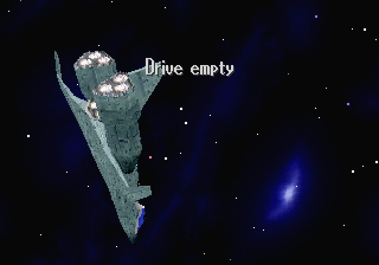
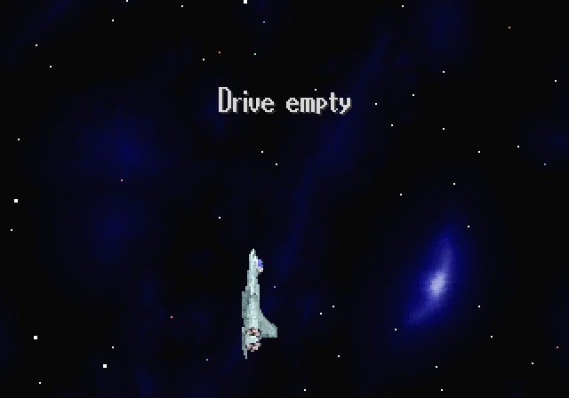
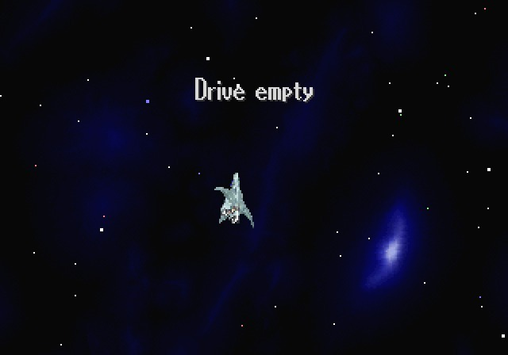

I don’t know if this is exclusive to the Japanese Saturn BIOS or not, but on the screen where the music player interface comes up, if you close the controls a space ship flies across the screen and disappears. It looks cool, but I’m not sure how to make it show up more. I think it comes up if you open and close the CD drive then hide the controls (hence the “Drive empty” in the screenshots here)
Not sure why I posted this but it just looks fucking cool. Sega was cool back then.